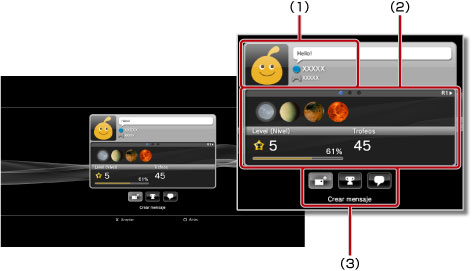
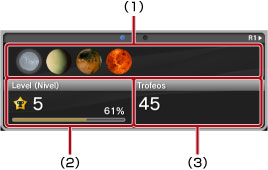
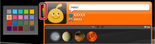

Amigos > Lista de amigos > Visualizar perfiles
Visualizar perfiles
Para utilizar esta función, es posible que se le solicite la actualización del software del sistema.
Puede consultar su perfil o el perfil de un amigo. Para consultar el perfil de un amigo, seleccione su avatar.

(1) |
Visualización de estado |
|---|---|
(2) |
Información |
(3) |
Panel de control |
Nota
Para obtener más información acerca de las visualizaciones de estado, consulte  (Amigos) > [Lista de amigos] > [Comprobación de estado] en esta guía.
(Amigos) > [Lista de amigos] > [Comprobación de estado] en esta guía.
Visualizar información en una pantalla de perfil
En un perfil puede consultar información como, por ejemplo, la evolución de trofeos, el número de trofeos obtenidos para cada nivel e información detallada acerca de sus amigos. Puede desplazarse por la información pulsando los botones L1 o R1.

(1) |
Trofeos obtenidos recientemente |
|---|---|
(2) |
Nivel actual y progreso hacia el nivel siguiente |
(3) |
Número total de trofeos obtenidos |
Uso del panel de control en [Perfil]
Al consultar un perfil, puede realizar distintas operaciones mediante el panel de control. Los iconos que aparecen en el panel de control varían según el estado de los amigos.
 |
Menú (título del juego) | Consulte una lista de acciones que pueden realizarse en el juego que se está jugando. |
|---|---|---|
 |
Agregar a un amigo | Permite enviar una solicitud para añadir a alguien a su lista de amigos. |
 |
Lista de mensajes | Visualice una lista de los mensajes que ha intercambiado con un amigo. |
 |
Crear mensaje | Permite crear un nuevo mensaje. |
 |
Comparar trofeos | Permite comparar su progresión de trofeos con el estado de un amigo. |
 |
Iniciar nuevo chat | Permite iniciar un chat. |
 |
Responder a la solicitud para agregar a un amigo | Permite abrir el mensaje de solicitud para agregar a un amigo y enviar una respuesta. |
 |
Agregar a lista de bloqueo | Permite agregar un amigo a la lista de bloqueo. |
 |
Eliminar de lista de bloqueo | Permite eliminar un amigo de la lista de bloqueo. |
Notas
- No es posible ocultar el panel de control.
- El panel de control no se muestra si se encuentra visualizando su propio perfil.
Cambio de color del fondo de pantalla para la pantalla de su perfil
Seleccione la pestaña superior izquierda de la pantalla de perfiles y, a continuación, pulse el botón  para visualizar la paleta de colores. Seleccione el color del fondo de pantalla para la pantalla de su perfil desde la paleta.
para visualizar la paleta de colores. Seleccione el color del fondo de pantalla para la pantalla de su perfil desde la paleta.

Nota
No es posible cambiar el color del fondo de pantalla para otras pantallas de perfiles de personas.
Comparación del estado de obtención de trofeos
1. |
En |
|---|---|
2. |
Seleccione
|
3. |
Seleccione un juego.
|